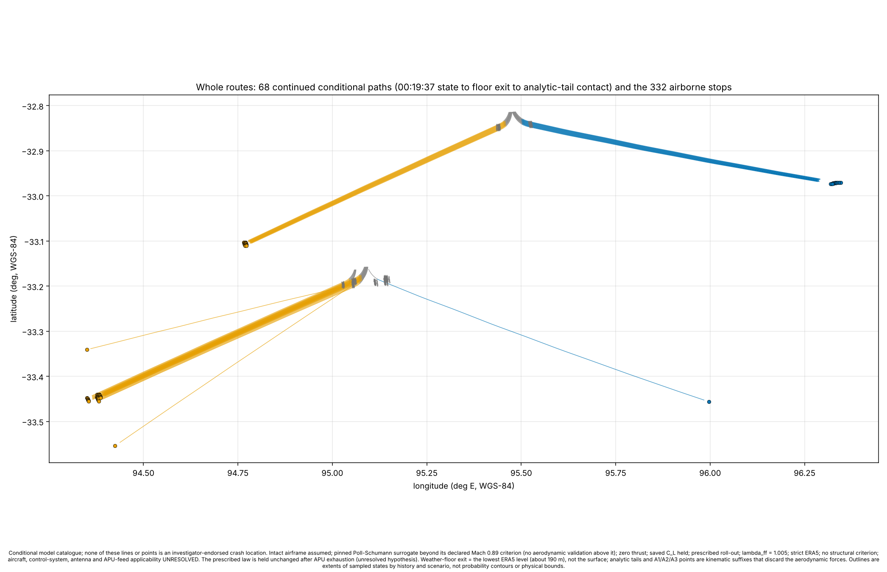
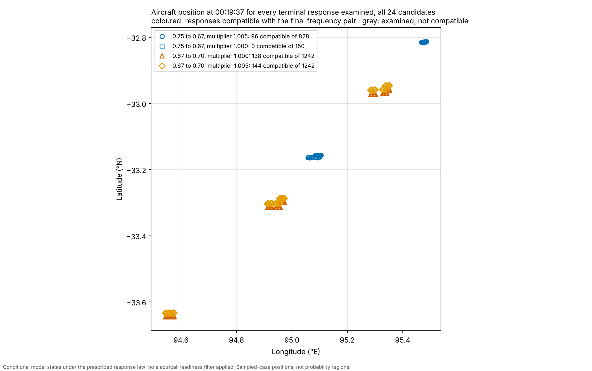
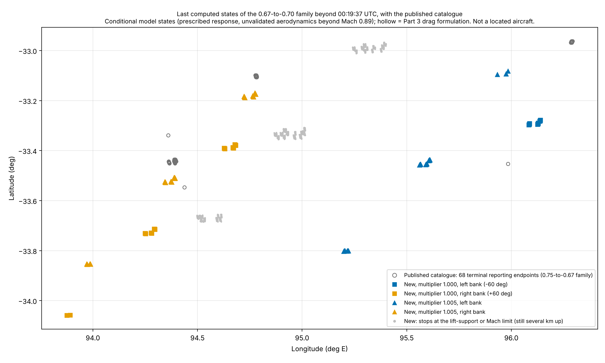

9M-MRO · MALAYSIA AIRLINES MH370 · 7–8 MARCH 2014
After the aircraft left radar coverage, its satellite terminal kept exchanging link-maintenance messages with the Inmarsat ground station at Perth. Each exchange recorded a round-trip light-travel time (BTO) and a Doppler frequency offset (BFO). This atlas flies a Boeing 777-200ER through the recorded weather, keeps the flights that satisfy those measurements under its declared selection and checking rules, and follows each one — turns, fuel, decreasing mass, clocks — from the last radar fix at 18:22:12 UTC down to the altitude where the weather record ends, about 190 m WGS-84 ellipsoidal height.
connected incoming flight histories, integrated continuously from the 18:22:12 radar handoff. Three incoming histories — C190, C191 and C192 — each retain two second-turn joint refinements (J1 and J2), giving six connected histories in two geographic families.
baseline terminal-response identities compatible with the final transmissions at 00:19:29 and 00:19:37 — 49 left-bank and 49 right-bank responses across the six histories.
registered continuation candidates carried beyond the final transmissions: 392 nominal response arms, 8 distinct roll-out-duration arms, 24 exploratory command alternatives.
flights that glide to the terminal reporting endpoint — the last computed state, where the weather record ends at 187–200 m WGS-84 ellipsoidal height (218–226 m above the model surface). The remaining seconds of flight span 1–5 km along track.
the terminal geography of this branch: two incoming clusters about 115 km apart, each splitting into a west-southwest lobe (right bank) and an east lobe (left bank) during the final glide.
located aircraft. A model state is not a wreck site; the lobes are sampled-case extents, not probability regions or physical bounds.

The 68 continued flights from the final satellite transmissions to their terminal reporting endpoints. Conditional calculation: pinned drag surrogate beyond Mach 0.89, prescribed roll-out, control law held after APU fuel exhaustion, strict ERA5 weather. Full detail, tables and per-cluster close-ups are on the Flight histories page.
The coverage audit listed the quantities that sat at the edge of the tested range. Each was then tested beyond that edge, with the method frozen before any run and saved cases reproduced exactly first.
| Test | Result | Status of the edge | Record |
|---|---|---|---|
| All 24 candidates carried to the final transmissions, with the fuel-timing filter removed (3,462 runs) | The nine Mach 0.67-to-0.70 flights also reproduce the final transmissions (282 responses). Positions at 00:19:37 form five groups along the arc (about 126 km) instead of two (53 km). The published six have no compatible response at the uncalibrated fuel flow. | Closed: no response window touches the grid edge | findings |
| Those 282 responses continued beyond 00:19:37 (1,974 propagations) | 943 of 1,128 arms stop at the lift-support limit; 185 glide to the weather floor. With the published 68, the last computed states span 32.96–34.06°S, 93.88–96.29°E (published alone: 32.96–33.55°S, 94.36–96.29°E). | Same assumptions as the published glides | findings |
| First leg, 18:22–18:29, beyond the tested climb rates and Mach targets (4,557 cases computed) | Level and descending first legs: 415 compatible, 288 accepted by the fuel and lift rules, at courses 310–314°. The 18:28 frequency residuals move from the limit of their band (−5.9 / −6.9 Hz, bound 7 Hz) to its centre (+0.8 / −0.1 Hz). | Not closed. Steeper descents and Mach targets above 0.70 untested; two slow-climb profiles could not be built | findings |
| New first legs carried to 18:39:58 (1,496 histories) | 1,466 satisfy all six early components and the fuel and lift rules; all 33 new first legs pass at every course from 165° to 195° and every turn start from 18:30:12 to 18:36:12. | Not closed on any side of the grid | findings |
| Starting state at 18:22:12 varied (5,508 cases) | 21 of 27 alternative starting states admit a compatible first leg. Track, Mach and altitude at 18:22:12 are not selected by the data; a 5 NM east–west shift of position is rejected within the courses tested. | First stage only | findings |
| Twelve of the new branches carried through the 18:42:12 intervention to the 19:41 arc (576 histories) | All twelve match the 19:41 timing at Mach 0.67, each at one course between 188° and 196.5°. They arrive within about half a degree of latitude of the published arrivals, but 700–1,400 m lower and with 200–730 kg less fuel. None is rejected by the fuel and lift rules. | Sample only; nothing after 19:41 computed | findings |
| Speed schedules from the new 19:41 arrivals to 00:11 (18 arrivals, 108 schedules) | The lower branches burn about 5,800–6,300 kg per hour against 5,540–5,640 for the published histories. 93 schedules run out of fuel before 00:11; only the level branch holding Mach 0.67 reaches 00:11, with 179–195 kg, which puts fuel exhaustion near 00:13, several minutes too early for the 00:19:29 log-on. | Fuel endurance separates the branches; a later climb and speeds below Mach 0.67 untested | findings |
Where this leaves the published histories. The early satellite measurements do not separate the published climbing branch from the level and descending ones; fuel endurance does. As flown in these tests, the alternative branches cannot stay airborne until the final transmissions, so the published histories keep their standing as the branch that satisfies both the measurements and the fuel. Three ways out remain untested: a climb after 19:41, a speed below Mach 0.67, and first legs between the published climb and level flight. Branches with enough endurance must fly near the published height, and such branches reach 19:41 at nearly the same position, so the untested branches most likely to survive are those most like the published ones. That is an inference, not a computed result.

Conditional model states at 00:19:37 UTC; not a located aircraft.

Grey circles: the published 68 endpoints. Every glide depends on a prescribed roll-out and the more favourable of two unvalidated drag formulations.
My own judgment, signed and kept separate from the model results: which regions I think deserve examination, what I can defend, and what remains a working hypothesis.
An AI model capability test: the conclusion of the model that directed and audited the work, labelled as such and kept apart from the results.
Follow one aircraft through the recorded sequence: the clock, turns, Mach schedule, fuel and mass, satellite comparisons, terminal branches — then export the complete numerical record.
The observations themselves: the Inmarsat burst log, published satellite states, the 7th arc in full, debris finds, seabed-search boxes, and where every dataset comes from.
Every model that was tried and retired — negated, superseded, withdrawn or abandoned — with the reason on the record and links to the original results.
What each model computes, from first principles: BTO and BFO, the flight model, what a drift particle is, and how the work checks itself.
Four and a half years of debris transport in reanalysed ocean currents. Standing conclusion: no determinable source region from the real finds.
The drift diagnostics, hindcasts and forward-transport runs, with their provenance audits. Further pages: Forward transport and Four years.
Different counts name different things. 6 incoming histories are complete flights from the radar handoff. 98 baseline response identities are the terminal responses compatible with the final transmissions. 128 displayed Mach-0.89 records are the 98 baseline states plus 24 exploratory command alternatives plus 6 reproduction controls. 196 final-transmission states are two samples (00:19:29 and 00:19:37) of each baseline response. 424 registered candidates are the continuation arms; 68 of them reach the terminal reporting endpoint, 332 stop at the model-support boundary (which does not by itself negate the flight hypothesis), and 24 are registered exploratory alternatives, not continued beyond their saved Mach 0.89 endpoints. Definitions and sources are in the flight-histories register.